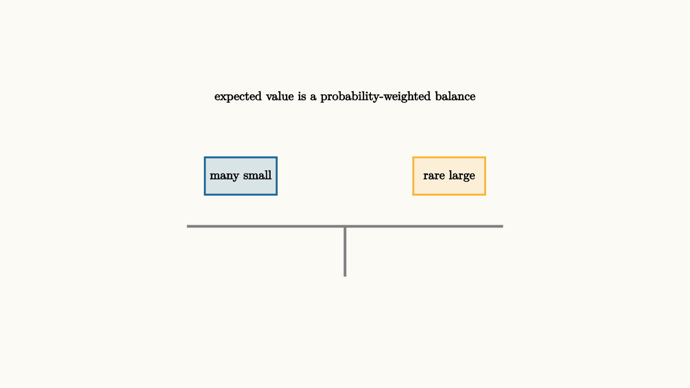

Expected Value Prices Uncertain Choices
Expected value is the average outcome you would see if the same uncertain situation could be repeated many times. It is the center of gravity of a probability distribution:
For a raffle ticket that pays $100$ with probability $0.02$ and $0$ otherwise, the expected payout is
That does not mean any ticket pays exactly $2$. It means the long-run payout per ticket would settle near $2$ over many independent tickets.
The phrase "long-run" is doing real work. If a class buys one ticket, the class sees either $0$ or $100$. If a stadium full of people each buys one ticket under the same rules, the organizer sees something close to $2$ paid out per ticket. Expected value is often more natural for the person who repeats or pools the risk than for the person who faces one draw.

source
background = [0.985, 0.98, 0.955, 1]
camera = Camera(4.8b)
mesh balance = block {
. stroke{GRAY, 3} Line(start: [-2.2, -0.45, 0], end: [2.2, -0.45, 0])
. stroke{GRAY, 3} Line(start: [0, -0.45, 0], end: [0, -1.15, 0])
. fill{alpha{0.15} BLUE} stroke{BLUE, 2} center{[-1.45, 0.25, 0]} Rect([1.0, 0.52])
. center{[-1.45, 0.25, 0]} Text("many small", 0.62)
. fill{alpha{0.15} ORANGE} stroke{ORANGE, 2} center{[1.45, 0.25, 0]} Rect([1.0, 0.52])
. center{[1.45, 0.25, 0]} Text("rare large", 0.62)
. center{[0, 1.35, 0]} Text("expected value is a probability-weighted balance", 0.62)
}
"weighted average"
play Fade(0.6)Expected value is useful because many real decisions have repeated or pooled structure. Insurance companies price policies across many customers. A store estimates returns across many purchases. A commuter compares routes across many mornings.
For a one-time decision, expected value is still a reference point, but it may not capture pain, cash constraints, or risk tolerance. Losing $1000 hurts most people more than winning $1000 helps, even though the dollar amounts match.
A warranty makes the distinction concrete. Suppose a $40$ warranty covers a repair that costs $250$ and happens with probability $10$ percent. The expected repair cost is $25$, so the warranty is expensive on pure expected dollars. A store likes selling many such warranties. A buyer might still choose one if a surprise repair would break the monthly budget. The same arithmetic can support different decisions because the two sides face different repetition and different consequences.
Expected value also helps separate price from fairness. A game that costs $3$ and has expected payout $2$ is profitable for the seller on average. That fact alone does not make the game dishonest. It tells you the price of the entertainment is about $1$ per play. Once the expected value is visible, the remaining question is whether the entertainment, risk, or protection is worth the gap.
source
param chance = 0.2
background = [0.985, 0.98, 0.955, 1]
camera = Camera(4.8b)
let EV = |chance| block {
let value = 3.0 * chance
. stroke{GRAY, 2} Line(start: [-2.4, -0.8, 0], end: [2.4, -0.8, 0])
. fill{BLUE} center{[-1.1, -0.8 + value, 0]} Rect([0.42, 2 * value])
. fill{ORANGE} center{[1.1, 0.7, 0]} Rect([0.42, 3.0])
. center{[-1.1, -1.25, 0]} Text("expected", 0.62)
. center{[1.1, -1.25, 0]} Text("jackpot", 0.62)
. center{[0, 1.55, 0]} Tex("E = p \\cdot \\text{payout}", 0.62)
}
"small chance"
mesh bars = EV(chance: $chance)
play Fade(0.5)
"larger chance"
chance = 0.42
bars = EV(chance: $chance)
play Lerp(1.0)Expected value becomes especially powerful when paired with a decision tree. Write each branch, put a probability on it, place a payoff at the end, then multiply and add. The tree forces hidden assumptions into view: which outcomes are possible, which probabilities are being guessed, and which costs have been left out.
The lesson to keep: expected value prices uncertainty by weighting outcomes by probability. It is the first number to compute, then judgment adds repetition, risk tolerance, cash constraints, and context.